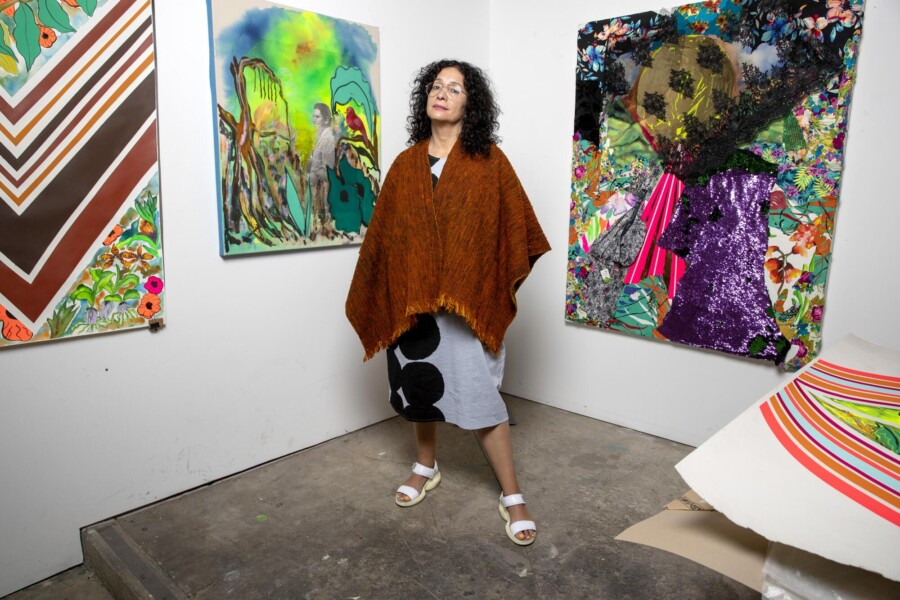

VOICES: Carolyn Castaño
In partnership with the Latino Cultural Center.
Los-Angeles-based artist Carolyn Castaño’s work explores the legacy of colonialism, industrialization, and capitalism on human and other-than-human life. Her multidisciplinary practice, spanning painting, installation, video, and artists books, has mined her family’s migration from Colombia to California and the ecological devastation on Cumanday, one of the six remaining tropical glaciers in Colombia. Her vibrant, highly patterned paintings draw on a range of sources, including the Wiphala flag, pre-Columbian textiles, and 19th-century travelogues and maps by European colonial explorers.
This summer, UIC Gallery 400 will host Castaño’s first solo exhibition in Chicago. It’s organized by Chief Curator and Director Lorelei Stewart, who joins Castaño for a conversation after her lecture.
ACCESS INFORMATION: This program is free and CART captioning will be available. For questions and access accommodations, email gallery400engagement@gmail.com.
ABOUT
Carolyn Castaño is a Los Angeles–based artist whose eco-feminist practice spans painting, installation, video, and artist books. Her work explores landscape, migration, and female and family identities through a blend of drawing, photography, and performance with patterns drawn from textiles, design, and geometric abstraction. Castaño is the recipient of the 2025 Guggenheim Fellowship in Fine Arts, the 2013 Joan Mitchell Foundation Grant, and fellowships from the California Community Foundation and the City of Los Angeles. Recent solo exhibitions include Craft Contemporary and the Orange County Museum of Art. Her work has been featured in group exhibitions at LACMA and the 56th Venice Biennale. Castaño is a Professor of Drawing and Painting at Long Beach City College and holds degrees from the San Francisco Art Institute and UCLA.